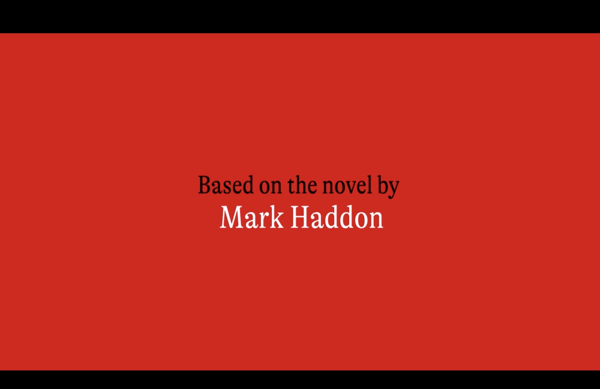
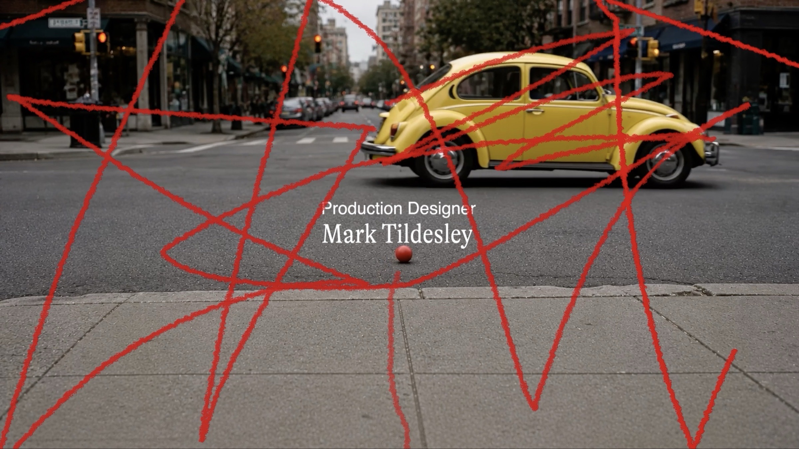
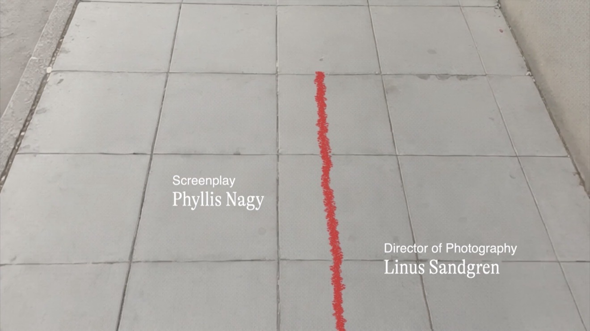
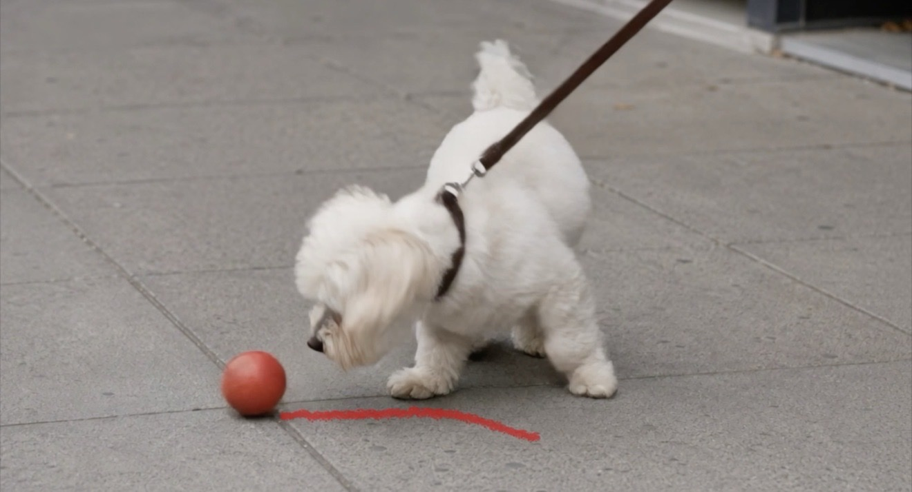
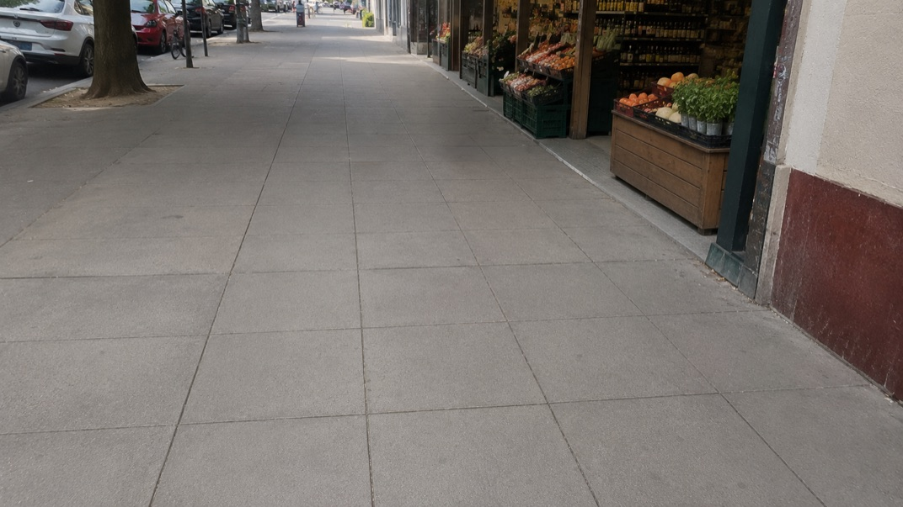
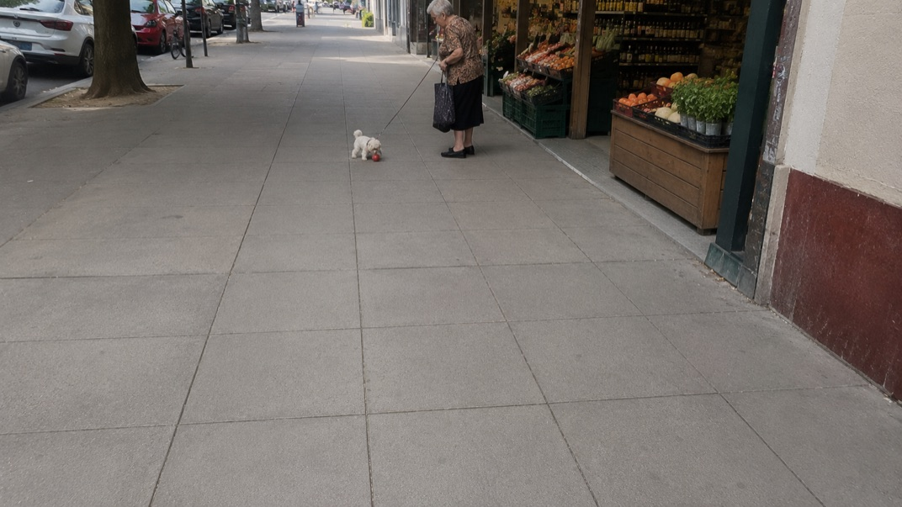

THE CURIOUS
INCIDENT OF THE
DOG IN THE NIGHT-TIME
Description
Title Sequence Design, Art Direction,
Motion Design
2026
Academic · Bezalel
A title sequence for an imagined film adaptation of Mark Haddon’s The Curious Incident of the Dog in the Night-Time. The sequence follows an ordinary walk down the street from Christopher’s point of view, revealing how he notices details and interprets the world around him. The imagery shifts between the street and visuals evoking the notebook in which he records his thoughts, while a hand-drawn red line traces his changing stream of thought.




I began by building the environment as an AI-generated still frame, carefully directing the street, perspective, camera angle, and lighting. The aim was to establish a consistent cinematic world through Christopher’s point of view.

Once the environment was established, I introduced the planned characters and actions while preserving the composition and continuity of details. This allowed me to refine each scene individually and gradually build the sequence of events along the street.
I approached the story through a naive, straightforward perspective, reflecting Christopher’s tendency to interpret the world in black and white. For him, the murder is not necessarily an emotionally charged event, but a mystery to be solved. Following this perspective, I chose to avoid depicting the violence directly and end the sequence with a symbolic, minimal scene focused on the chase itself. The scene returns to the red screen used throughout the opening for the title cards, but this time silhouettes enter the composition, interacting with the typography to gradually reveal the film’s title.